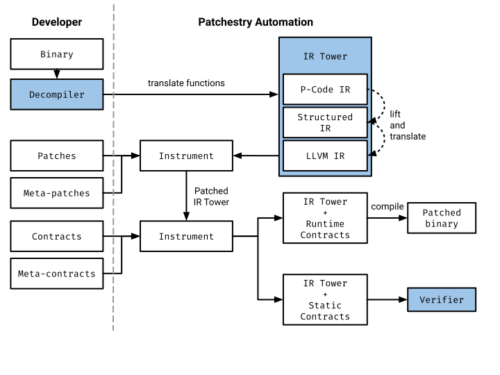

MLIR-based binary patching framework
Patchestry aims to make the same impact to binary patching as compilers and high level languages did to early software development. Its main goal is to enable developers without extensive knowledge of the deployment platform of the binary to patch the binary. To do this, the developer has to be confident that what they're patching is functionally equivalent to what is deployed and also that the patch they write will integrate into the deployed binary without issue.
Patchestry leverages MLIR as the foundational technology instead of LLVM IR. MLIR is an emerging compiler development technology allowing for the specification, transformation, and mixing of IR dialects. The MLIR approach has significant industry momentum, and has been adopted by companies such as Google (in TensorFlow) and Meta (ClangIR). With MLIR, the decompilation process could be stratified into a Tower of IRs (IR dialects). Each IR represents the same program, but at a different level of abstraction.
MLIR brings a notable advantage by enabling the creation of representations to streamline communication between diverse state-of-the-art tools. For instance, one can create an MLIR dialect specifically for P-Code (a program representation utilized by Ghidra) to optimize integration with the Ghidra decompiler. Alternatively, an LLVM IR dialect can be employed to compile back to the executable, and MLIR can support LLVM-based contract validation through a symbolic executor such as KLEE. Moreover, MLIR provides flexibility to devise our own dialects for representing contracts in specialized logic, such as SMT. Finally, our high-level dialect, developed under DARPA V-SPELLS, captures the intricacies of full-featured C. Our compiler stacks empower us to compile C into any of the previously mentioned representations, promoting seamless interconnection between them.
Technical Rationale
Our recent experience on AMP, as well as our performance on other DARPA binary analysis programs (PACE, CFAR, LOGAN, CGC, Cyber Fast Track), have led us to four guiding principles that we believe patching solutions for legacy software must follow in order to be successful.
-
Fully automated approaches are doomed to failure. In general, the process of decompilation is an inherently intractable problem. However, developers are often capable of distinguishing between decompilation outcomes deemed 'good' or 'bad', but encoding that kind of heuristic logic into a system invariably yields unpredictability and unsoundness. Hence, we assert that the involvement of semi-skilled or skilled human developers is essential in the process. The best-case scenario is that a developer can use an existing source code patch as a guide. Given this patch, they can locate the corresponding vulnerable machine code within a binary using binary function symbol names. The worst-case scenario involves the ad hoc application of tools (e.g. BinDiff, BSim) and reverse engineering skills to an opaque binary blob that is without symbols or debugging information.
-
Developers must be able to leverage pre-existing software development experience and not have to concern themselves with low level details. That is, they should be able to operate as if the original source code and build process/environments were available, and not be expected to have expert knowledge of every machine code language that may be encountered.
-
From-scratch development efforts do not scale. As much as possible, pre-existing tooling that already handles the inherent scalability challenges in (de)compiling code for such a wide variety of platforms should be leveraged. For example the Ghidra decompiler can decompile over 100 machine code languages to C, and the Clang compiler can generate machine code for over 20 machine code languages. Rolling new solutions from scratch is impractical.
-
There is no one-size-fits-all way of representing code. A “complete” solution to machine code decompilation only exists at the end of a long tail of special cases. Patchestry aims to provide decompilation to a familiar, C-like language. Patchestry will not, however, decompile to C or a specific ISO dialect thereof because some machine code constructs have no equivalents in C, while others are only loosely equivalent given non-conforming dialect extensions.
Project Goals
Patchestry accomplishes its goals by integrating various innovative concepts guided by the four principles described in technical rationale:
Unified Tooling Integration
Guided by the third principle—recognizing the limitations of from-scratch development efforts—Patchestry seamlessly integrates existing tooling for decompilation and recompilation in the binary patching process. Patchestry advocates a unified tooling integration approach using an MLIR Tower of Intermediate Representations (IRs) as a mediator between tools. This strategy enables the incorporation of cutting-edge (de)compiler tools into a cohesive system, allowing the utilization of specialized tools for each task and ensuring effectiveness and optimal outcomes across all desired functionalities.
Incremental Decompilation
Patchestry’s innovative approach involves leveraging multiple program representations simultaneously across various layers of the Tower of IRs. While state-of-the-art decompilers already offer diverse representations, what sets the Tower of IRs apart is its capability to create custom user-defined abstractions (layers) while preserving relationships between these layers. This modular approach facilitates seamless incremental decompilation and recompilation processes. This is crucial for effortlessly devising specific abstractions tailored to unique platforms.
Unifying Representations for Contracts, Patches, and Software
The Tower of IRs also aligns with the fourth guiding principle: There is no one-size-fits-all way of representing code. Maintaining multiple representations simultaneously in the Tower of IRs allows us to establish meaningful relationships between them and innovate in how we connect tools and conduct analyses. Additionally, this approach allows us to consolidate all necessary components for patching within the same representation: patch description, contract description and the software. This unified strategy streamlines tooling for analysis and facilitates the recompilation of patched software, resulting in a single artifact that can undergo desired formal analyses, such as LLVM-based analysis.
Declarative Patching and Contracts Description
To address our second guiding principle, which emphasizes the importance of allowing developers to leverage their existing software development experience, we mandate that all interactions with patching occur in a language commonly understood by developers. Specifically, a C-like language. To facilitate this, we propose a declarative library designed for describing patches, their application. Following the same principle, Patchestry introduces contracts in C-like DSL. These contracts serve as constraints guiding both decompilation and recompilation, and they must hold at all relevant steps of each process.
Decompilation Workflow

Patchestry’s technical approach is designed to enable the following seven-step workflow:
-
A developer is tasked with patching a vulnerability in a program binary running on a device. How the user acquires a copy of the binary (e.g. downloaded from a vendor’s website, extracted from a network capture, extracted directly from a device over serial port or JTAG, etc.) is not part of the project.
-
The developer loads the binary into the open-source Ghidra interactive decompiler. Developers will be enabled to leverage Ghidra’s features and plugins to locate the function(s) to patch, though previous binary analysis expertise is not required. We anticipate that developers will apply tools such as BinDiff or BSim, rely on symbol names or debug information, or apply reverse engineering techniques.
The Patchestry workflow includes Ghidra because it is open-source and actively maintained by the National Security Agency and because it supports a wide variety of binary file formats (ELF, COFF, PE, etc.) and machine code languages used by medical devices. Ghidra also implements a battery of heuristics that act as good first guesses as to the locations and references between functions and data in the binary. Although perfect identification/recovery of functions, data, and data types in a binary is intractable, the value of interactivity in Ghidra is that the human developer can fix incorrect conclusions drawn by the decompiler’s heuristics.
There are two reasons why Patchestry’s workflow does not allow the developer to modify Ghidra’s decompilation output and then re-compile that into a patchable representation. First, Ghidra’s decompilation is not guaranteed to be syntactically correct or compilable. This can be mitigated through developer effort; however, the level of effort increases with the complexity of and number of references in the target function(s). Second, Ghidra’s heuristic decompilation pipeline has been proven to be unfaithful with respect to the execution semantics of the machine code. In the worst case, this could result in a developer inadvertently introducing new vulnerabilities into the program during the patching process.
Despite Ghidra’s decompilation not being precise enough for recompilation, our experience from AMP tells us that Ghidra’s decompilation is good enough to be a productivity multiplier for developers trying to locate functions that need patching.
Moreover, the modular design of Patchestry affords the flexibility to seamlessly integrate more formally rigorous decompilers and their representations in the future, as their capabilities align with our technical requirements. Currently, the majority of existing tools are predominantly of a research-oriented nature, often concentrating on x86 architecture or even just its subset, which is not sufficient for the diverse nature of software.
- After locating the relevant function(s) in Ghidra, the Patchestry plugin will present the developer with an editable decompilation of the target function(s). Patchestry’s decompilations will be sound and precise with respect to the available information in Ghidra’s analysis database. Regardless of how small the patch size could be, Patchestry will always formulate the problem at the function granularity. There are theoretical and pragmatic reasons why Patchestry’s minimum patch recompilation granularity is function-at-a-time.
From a theoretical standpoint, function granularity patches enable Patchestry to leverage stronger guarantees about the application binary interface (ABI). It is only at the entry and exit points of a compiled function that higher-level, human-readable types can be reliably mapped to low level machine locations (registers, memory).
Patchestry leverages the open-source Clang compiler, which can already target relevant platforms. A restriction in compilers like Clang that nonetheless favors our approach is that functions are the smallest compilable unit of code. Our task in Patchestry is thus to convert code for recompilation into LLVM IR functions, which Clang can convert to machine code.
- The developer edits the decompiled function(s), enacting the necessary changes to patch the vulnerability in the decompiled code. Patchestry’s highest level decompiled code (C-like) will look approximately similar, regardless of the platform/architecture of the medical device software. This will help improve developer productivity. Moreover, the meta-patch library will allow the developer to automate the patching process.
At this stage, the binary-level patch has not yet been formulated. What particular changes are needed to patch a given vulnerability are beyond the scope of the project and require an external tool. Patchestry will, however, provide a library of “patch intrinsics” such as “add bounds check.” These will be formulated as templates of meta-patches.
A developer can make near arbitrary changes within the body of the decompiled code (e.g. add, remove or replace its portions). Although Patchestry aims to provide verifiable guarantees about feature- and bug-compatibility of its decompilation with respect to the Ghidra database, absent contracts or specifications about the intended behavior of the code, Patchestry cannot make guarantees about the correctness of the edited decompilation. That is, Patchestry cannot prevent a developer from introducing new flaws into the binary, nor can it guarantee that a patch comprehensively fixes the root cause of the vulnerability.
To mitigate the problem of developer- or decompiler-introduced emergent behaviors, Patchestry will allow developers to leverage model- and contract-based software verification techniques. These techniques are normally challenging to apply to lifting/decompilation due to a lack of end-to-end visibility into the lifting process; usually the techniques only apply at the very last stage, on the decompiled/lifted result. However, Patchestry’s approach to decompilation is multi-level: decompilation progresses through a stage of increasingly high-level IRs. By taking a multi-level approach, Patchestry can instrument contracts at various stages of the process.
-
Verification of contracts. To ensure the reliability of patched code along with associated contracts, Patchestry offers a toolset for generating output compatible with both static and dynamic analysis tools. The optimal choice for this purpose is LLVM IR, given its verification confirms the fulfillment of contracts before its compilation. Patchestry allows for easy integration of LLVM-based analysis tools such as KLEE or SeaHorn, automating the verification process.
-
Patchestry formulates the patch by compiling developer-edited decompiled function(s), and packages the patch for use by a binary patching tool. Patchestry will utilize a pre-existing tool, such as Patcherex or OFRAK, to enact the patch process, creating a new version of the binary.
-
Finally, the developer will load the new version of the binary onto the device. How the developer loads the new version of the binary is not part of the project.
Architecture
The Patchestry design places a strong emphasis on modularity and seamless developer interaction. The developer plays a key role, providing the binary pieces to be patched, a patch description, and instructions on how to apply these patches using the meta-programming framework (meta-patches). Contracts are similarly specified and applied by instrumentation using the same meta-language. Utilizing state-of-the-art tools, we perform decompilation and program analysis.
A significant architectural innovation is the MLIR Tower of IRs, which serves as the connecting element. This tower facilitates the association of representations between decompiled programs, such as from P-Code and compilable and structured representations like LLVM IR. The tower's modularity allows for the specification of any DSL for the decompiled program, with the only requirement being the translation of this DSL to a layer of the tower. In our case, Ghidra's P-Code serves as a suitable starting point layer. However, this modular design allows new decompilers to be integrated into Patchestry in the future while preserving the rest of the architecture.
Utilizing the same representation (MLIR dialects) for both the decompiled binary and the compiled patched version facilitates seamless instrumentation and inlining of patches, ultimately producing a patched MLIR (Tower of IRs). The tower's various abstraction layers enable precise specification of points of interest, surpassing the limitations of a single representation. Additionally, the tower abstracts away from the decompiled representation (P-Code), facilitating modular design in the future.
Contract handling follows a similar pattern. Described in a C-like language, contracts can take the form of static or runtime assertions or error handlers. These are inserted into the code while it is in the IR Tower form. Runtime checks are then compiled and remain in the patched binary. Static contracts are checked using a formal verifier. The flexibility to invent new contract mechanisms according to specific needs is a key feature.
In the verification phase, which is the final step, Patchestry is designed to accommodate various verification methods. The Tower allows to produce a customized representation for the analysis, but it is advisable to stick to the same representation as the compilation (such as LLVM IR) to prevent errors during translation. Slicing the codebase into independent parts influenced by the patch makes LLVM-based static analysis of the representation with contracts tractable. We expect that most of the patches being local influence only a small part of the program, therefore using the dependency analysis, we can isolate the part of the program that needs to be verified.
CVE-2021-22156 Patching
An example of patching the CVE-2021-22156 vulnerability, addressing an integer
overflow within the calloc() function of the C standard library. This
vulnerability affects versions of the BlackBerry QNX Software Development
Platform (SDP) up to version 6.5.0SP1, QNX OS for Medical up to version 1.1, and
QNX OS for Safety up to version 1.0.1. A malicious actor could exploit this
integer overflow issue to execute arbitrary code or initiate a denial of service
attack.
Consider the vulnerable code snippet below. Here, a user-defined function,
get_num_elements(), is employed to determine the size requirements for a dynamic
array of long integers assigned to the variable num_elements. During the
allocation of the buffer using calloc(), the variable num_elements is multiplied
by sizeof(long) to calculate the overall size requirements. If the resulting
multiplication exceeds the representable range of size_t, calloc() may allocate
a zeroed buffer of insufficient size. Subsequently, when data is copied into
this buffer, an overflow may occur, posing a potential security risk.
A vulnerable code in which the standard library function calloc() may allocate
a zeroed buffer of insufficient size:
size_t num_elements = get_num_elements(); // from the outside environment
long *buffer = (long *)calloc(num_elements, sizeof(long));
if (buffer == NULL) {
/* Handle error condition */
}
The desired result of applying Patchestry to fix the vulnerable code:
size_t num_elements = get_num_elements(); // from the outside environment
/* Patch start */
if (num_elements > SIZE_MAX/sizeof(long)) {
/* Handle error condition */
}
/* Patch end */
long *buffer = (long *)calloc(num_elements, sizeof(long));
if (buffer == NULL) {
/* Handle error condition */
return;
}
To create this simple patch, we require two essential components: the patch itself and the specific locations where the patch should be applied. In Patchestry, we offer developers a library, allowing them to articulate these components using familiar C-like syntax:
// 1. Patch in C
[[CVE-2021-22156]] void patch(size_t num_elements) {
if (num_elements > SIZE_MAX/sizeof(long)) {
/* Handle error condition */
}
}
// 2. Developer-defined meta-patch transformation
void meta_patch(source_module_t module) {
for (const callsite_t &place : module.calls("calloc")) {
place.apply_before("CVE-2021-22156::patch", { place.operand(1) });
}
}
Patchestry introduces a metaprogramming interface enabling developer-defined code transformations. Patchestry’s interface supports common patching operations such as code insertion, replacement, alteration, and deletion. To obtain the source module from the program binary, we leverage state-of-the-art decompilers and seamlessly integrate them into the MLIR source representation, as elaborated later. Patchestry’s source representation can be modified and queried through the metaprogramming API.
The second crucial aspect of Patchestry involves providing assurances regarding patches. Similar to the patching process, we empower developers to define contracts in our C-like language, and seamlessly embed these checks into the binary. Unlike patches, contracts are mandated not to alter program state. There are two types of contracts in Patchestry: runtime contracts, addressing unexpected states during runtime, and static contracts, exclusively used for formal verification without persisting in the compiled binary.
// Contract
[[CVE-2021-22156]] void contract(size_t num_elements) {
assert(num_elements <= SIZE_MAX/sizeof(long));
}
// Meta-contract
void meta_contract(source_module_t module) {
for (const callsite_t &place : module.calls("calloc")) {
place.apply_before("CVE-2021-22156::contract", { place.operand(1) });
}
}
An example of Patchestry contract that defines the expected functionality of the program under test written in the C-like Patchestry contracts DSL. A contract is similar to a regression test or a behavioral assertion that an analysis tool like KLEE would check.